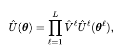
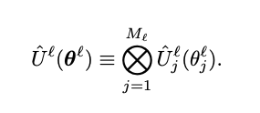
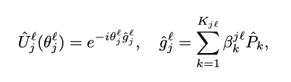
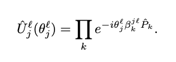
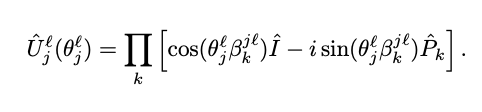
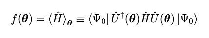
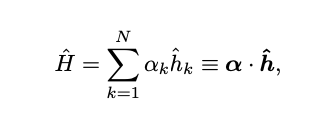
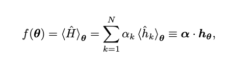
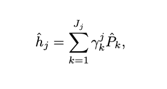

Understanding Mathematical Theory Behind TensorFlow Quantum for Hybrid Learning
(Last updated: June 4, 2021)
The paper “TensorFlow Quantum: A Software Framework for Quantum Machine Learning” by Michael Broughton, et al. introdues the TensorFlow Quantum library with respect to implementing hybrid models that handle classical or quantum data 1. In this post, I attempt to give a brief explaination of the equations given in Section III, “Theory of Hybrid Quantum-Classical Machine Learning.”
Equation (1)

This equation…
Equation (2)

Equation (3)

Equation (4)

Equation (5)

Equation (6)

Equation (7)

Equation (8)

Equation (9)

References
-
Broughton, Michael, et al. “TensorFlow Quantum: A Software Framework for Quantum Machine Learning.” ArXiv.org, 6 Mar. 2020, arxiv.org/abs/2003.02989. ↩︎